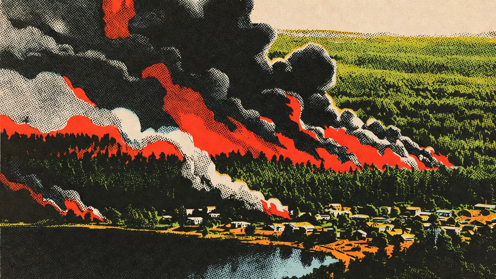

El Servicio Nacional de Prevención y Respuesta ante Desastres (Senapred) decretó Alerta Roja en la comuna de Vichuquén, región del Maule, debido a un incendio forestal denominado Alto Llico que ya ha consumido más de 75 hectáreas (con reportes posteriores indicando avance hasta 200 hectáreas) y se aproxima peligrosamente a zonas habitadas.
El siniestro se desarrolla en sectores de alta pendiente boscosa cercanos al lago Vichuquén, lo que genera condiciones complejas para el control del fuego y aumenta el riesgo para viviendas dispersas y plantaciones forestales en la interfaz urbano-rural.
Mediante el sistema de Alerta SAE, Senapred activó la evacuación preventiva del sector Quebrada Culenmapu. Las autoridades han enfatizado la necesidad de actuar con calma, seguir las rutas indicadas por personal de emergencia y no regresar hasta que se levante la alerta oficial.
Carabineros, Bomberos y equipos de Senapred coordinan el traslado de familias hacia albergues temporales en la comuna y localidades cercanas. Hasta el momento se reportan al menos tres viviendas afectadas por el avance del fuego en este sector.
Según el último reporte de la Corporación Nacional Forestal (Conaf), el combate del incendio cuenta con un amplio contingente:
Las condiciones meteorológicas –vientos moderados, baja humedad y vegetación seca– han favorecido la propagación rápida del frente de llamas, que avanza principalmente en dirección sureste.
Senapred y las autoridades locales reiteran las siguientes medidas preventivas:
El incendio permanece en fase de combate activo. Senapred mantiene la Alerta Roja vigente mientras persista riesgo para la población, viviendas e infraestructura crítica. Nuevos reportes se entregarán durante el día a través de canales oficiales.
Esta publicación es una síntesis informativa basada en datos públicos de Senapred, Conaf y reportes de prensa al 15 de febrero de 2026. Manténgase informado por fuentes oficiales.